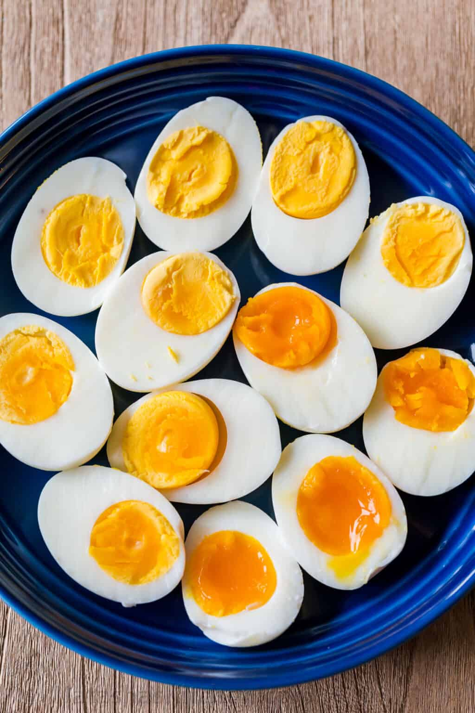

Boiled Eggs

It's pretty trivial, boring, and plain dish. However, it is simple, it is fast, nutritious, and, most importantly, healthy.
Note:
I eat about 4 eggs a day, a pair in the morning, and a pair in the evening.
Its up to you to decide on number of eggs, but don't eat too much - they contain alot of cholesterol(or so i've been told).
Ingridients:
- Eggs
- Water
- Salt/pepper to your liking
- Spring onion to your liking
Steps:
- Fill up the pot to the level when eggs are fully submerged, but don't put in the eggs yet.
- Boil the water.
- Gently put eggs in the water, use a tablespoon for this.
- Wait around 6 to 10 minutes, the more you wait the firmer the yolks will be.
- Drain the hot water and replace it with cold one.
- Let the eggs cool a minute or two and then peel them. Do this in the used water so the shell could come off easier.
- Cut them, season them with spices and spring onion, or eat it raw, you can't go wrong. Enjoy!